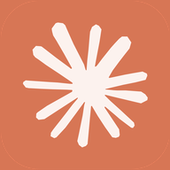
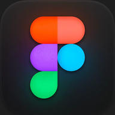
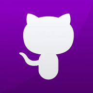

{{ t.title }}
{{ t.body }}
 Jack Donovan · Product & Service Design Lead
Jack Donovan · Product & Service Design Lead
From first idea to launch, I frame the problem, set the direction and build the experience, setting the foundations that help it scale. In sectors that shape everyday life.
Need some fresh eyes on a problem?
I love unpacking complexity. Getting to know the team involved, nailing what customers need and holding that up against what the business is trying to achieve. Where the two meet dictates the outcome I go after. Then I build whatever’s missing to get there: a way of working, a quality bar, a team or a new feature to test.
More about me →{{ t.body }}
{{ qa.text }}
I’m curious, collaborative and direct. I’ll ask the tough questions early, get stuck in with your team, and stay close to the work until it’s real.
{{ w.body }}
Best for {{ w.best }}
The tools change. How I use them doesn’t. AI does the legwork (research, synthesis, prototypes), so we get to tested answers sooner. The judgement, collaboration and craft stay distinctly human.

Claude Think & make
Figma Design
GitHub PublishNeed some fresh eyes on a problem?
A free 30-minute intro call is the quickest way to see whether I can help. Bring the problem, and leave knowing what I’d tackle first. Or email hello@jackdonovan.co.
Taking on projects in the UK and internationally. Open to the right permanent role, too.
Best fit: early-stage and scaling teams. I’m especially interested in products that foster healthier relationships with our devices, the planet and each other. Anything from a one-day workshop to ongoing work.